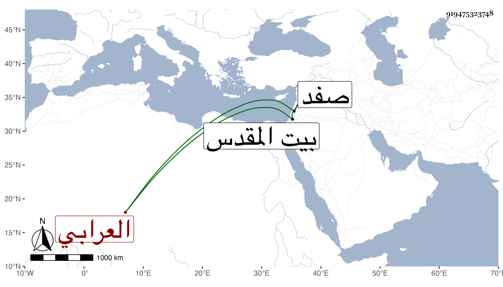

0902Sakhawi.DawLamic.ITO20230111-ara1.EIS1600.919475323748
Biography ID: 919475323748
إبراهيم بن الحسن بن إبراهيم بن عبد الكريم برهان الدين العرابي بفتح أوله وتشديد ثانيه ورأيته بخطه بكسر ثم تخفيف نسبه لقرية من ضواحي صفد المقدسي الشافعي ولد في سنة خمسين وسبعمائة كما قرأته بخطه وتفقه بالبدر محمود العجلوني سمع عليه بحث تيسير الحاوي الشرف البارزي بسماعه له على أصحاب مؤلفه وكذا أخذ عنه سواه وأخذ عن خاله الشمس العرابي أخذ الأصلين عن العلاء بن العطار تلميذ النووي وذكر أنه سمع الصحيح على التقي القلقشندي والتاج الزيلعي والصلاح بن المنجا الحنبلي ومحيي الدين الرجبي والبرهان بن جماعة وأبي الخير بن العلائي ومن الأخير وحده صحيح مسلم ومن التاج الاقفاصي المقدسي جامع الترمذي وكذا سمع على الشمس بن حامد وغيره وحدث سمع منه الفضلاء ولقيه ابن فهد وغيره وكان أحد فقهاء الصلاحية ممن يديم التلاوة بحيث يختم كل يوم غالبا . مات في رجب ظنا سنة إحدى وأربعين بالقدس .
